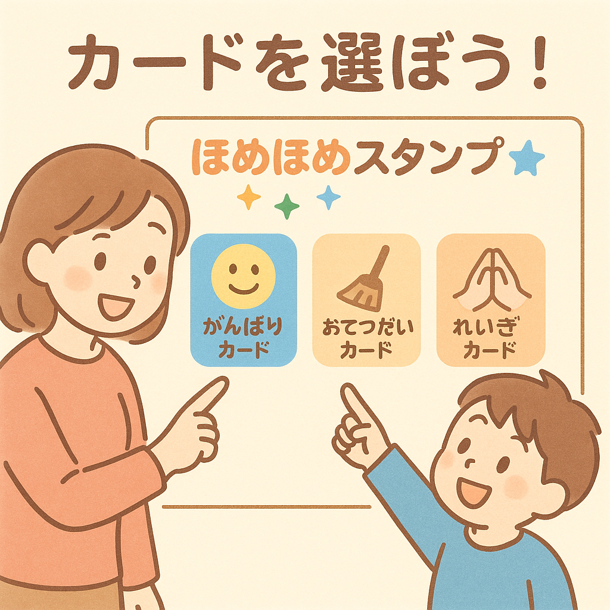
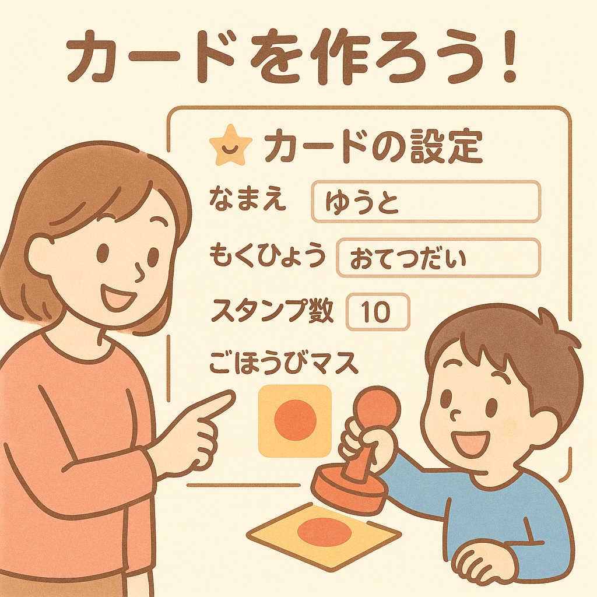

ほめスタのつかいかた
子どもの「できた！」を応援するスタンプカードです
① ほめスタってなに？
「できた！」行動にスタンプをおして、
がんばりを見える化するアプリです。
ほめるきっかけがふえて、
自信とやる気がそだちます。

② つかいかた（3ステップ）
STEP1
カードをえらぶ or つくる
ホーム画面でカードをえらぶか、「あたらしいカードをつくる」をおします。
STEP2
なまえ・もくひょう・スタンプ数をきめる
「なまえ」「もくひょう」「スタンプのかず」「ごほうびマス」をきめます。
STEP3
できたときにスタンプをおす
がんばれたマスをタップして、スタンプや写真をえらびます。
メモとコメントのつかい方
スタンプカードの下には「メモ」と「◯◯へのコメント」の欄があります。
- 「メモ」… その日のできごとや、お子さんががんばったポイントを自由にメモできます。
- 「◯◯へのコメント」… お子さんに向けたほめ言葉やメッセージを書く欄です。
「◯◯してくれて助かったよ」「チャレンジしたことがすごいね」のように、
行動や気持ちを具体的にほめると、自己肯定感アップにつながります。
スタンプ＋ほめコメントで、「がんばり」を目に見える形で残していきましょう。

③ ボタンの説明
-
・「ポイント交換」
お手伝いを1回10Pなどした際に、ポイントマスを「交換ずみ」にしてチェックマークをつけます。 -
・「ユーザーきりかえ」
ほかのカード（きょうだいなど）をえらびなおします。 -
・「今のカードを修正」
なまえやスタンプのかず、ごほうびマスなどを修正できます。

④ うまくつかうコツ
- できた直後に「ほめる＋スタンプ」をする
- むずかしすぎる目標にしない（小さな行動から）
- ごほうびは「特別な時間」や「いっしょにすること」でもOK
- できなかった日は責めず、「つぎどうする？」と声かけする